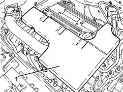
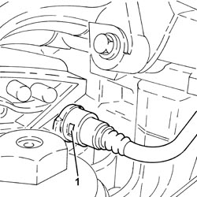
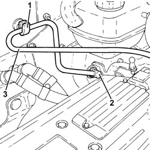
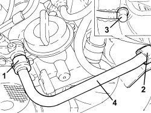
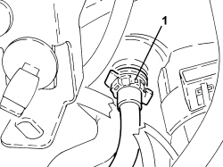
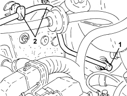

3330D26 VACUUM PIPE FOR BRAKE SERVO ASSEMBLY - R.R
- Path
- Procedures > 33 BRAKES > 3330 HYDRAULIC BRAKE SYSTEM > 3330D BRAKE VACUUM SYSTEM > 3330D26 VACUUM PIPE FOR BRAKE SERVO ASSEMBLY - R.R
- Kind
- repair procedure (removal / refitting; the operation number is the code)
- Applies to
- all engines; all production periods
- Interactive page
- https://sloeber94.github.io/elrnDB-fCrm/en/#/194000494
Applies to: engines: 2.2; all production periods
 Removing
Removing
 Refitting
Refitting1. Remove the sound insulation cover fastened to the engine by three pins.

Applies to: engines: 2.2; all production periods
1. Disconnect the quick-release fitting for the brake servo vacuum intake pipe, air chamber side.

Applies to: engines: 2.2; all production periods
1. Release the brake servo vacuum pipe from the fastenings.
2. Withdraw the brake servo single-acting valve from the brake servo.
3. Remove the vacuum pipe assembly for the brake servo.

Applies to: engines: 2.2; all production periods
Refitting
Removing- Refit the brake servo vacuum pipe assembly in its seat.
- Refit the brake servo single-acting valve in its seat on the brake servo.
- Secure the brake servo vacuum pipe using the clips.
- Connect the quick-release fitting for the brake servo vacuum intake pipe, air chamber side.
- Place the sound insulation cover back in its housing and secure it to the engine using the three pins.
Applies to: engines: 1.9 JTD 8v, 1.9 JTD 16v, 2.4 JTD 20v; all production periods
Removing
RefittingOp. 1016A10 SOUND-PROOFING COVER - R.R
1. Disconnect the rapid connector for the vacuum intake pipe for the brake servo, vacuum pump side.
2. Release the brake servo vacuum pipe from the fastenings.
3. Withdraw the brake servo single-acting valve from the brake servo.
4. Remove the vacuum pipe assembly for the brake servo.

Applies to: engines: 1.9 JTD 8v, 1.9 JTD 16v, 2.4 JTD 20v; all production periods
Refitting
Removing- Refit the brake servo vacuum pipe assembly in its seat.
- Refit the brake servo single-acting valve in its seat on the brake servo.
- Secure the brake servo vacuum pipe using the collars.
- Connect the rapid connector for the vacuum intake pipe for the brake servo, vacuum pump side.
Applies to: engines: 1.8; all production periods
Removing
Refitting1. Disconnect the rapid connector for the brake servo vacuum pipe from the modular intake manifold.

Applies to: engines: 1.8; all production periods
1. Disconnect the single-acting valve from the brake servo.
2. Open the retaining clips and remove the brake servo vacuum pipe assembly.

Applies to: engines: 1.8; all production periods
Refitting
Removing- Place thebrake servo vacuum pipe in its housing and secure it using the retaining clips.
- Connect the single-acting valve to the brake servo.
- Connect the rapid connector for the brake servo vacuum pipe to the modular intake manifold.